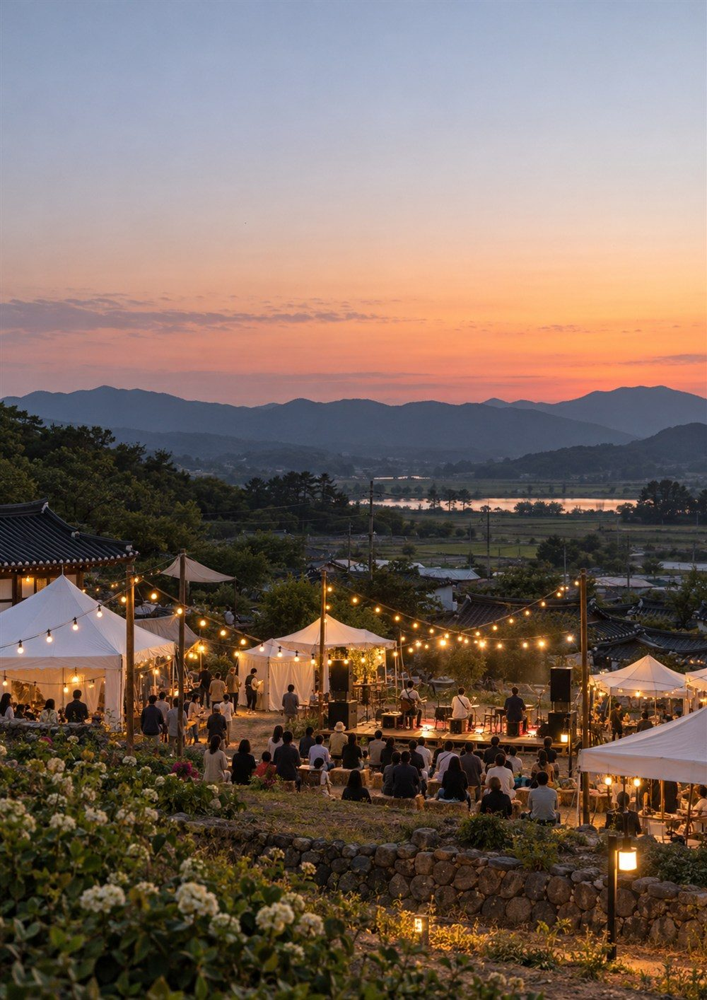

강찬희를 소개합니다
강찬희를 소개합니다.
사람과 현장을 이해하고,
숨겨진 가능성의 가치를 발견합니다.
강찬희
하는 일
문화예술 기획 · 미디어 홍보 및 자문(언론인) · 농업회사 운영(치유농업/체험) · 브랜딩 컨설턴트

하는 일
- 문화예술분야 기획 및 운영
- 지역사회 모니터링단 운영
- 정책 자문 및 컨설팅
- 치유농업 및 관광체험 운영
- 미디어 홍보 및 언론 활동
- 소통 및 갈등 조정 자문
- 공공기관 평가 및 사업 심의
- 마을 공동체 활동가 양성 및 자문
사람과 현장을 이해하고, 다양한 가능성을 발견하여
함께할 수 있는 새로운 방향을 기획합니다.
1
왜 강찬희와 함께해야 하는가?
함께 고민하고
함께 이야기하다
| 핵심 방향 | 혼자 고민하던 문제를 함께 이야기하며 현실적인 해결 방법을 찾아보자! |
|---|---|
| 주요 활동 |
|
2
기획문화예술 현장 총감독
아이디어를 현장으로 보여줍니다.
문화예술 공연과 행사, 축제를 기획하고 운영합니다.
기획 단계부터 현장 운영까지 사업의 목적과 참여자의 특성을 고려하여 실행 가능한 방향을 설계합니다.
주요 활동
- 문화예술 공연 기획 및 운영
- 지역축제 및 행사 기획
- 행사 운영총괄 및 현장 진행
- 놀이문화 및 참여형 프로그램 기획
- 레크리에이션 및 뉴스포츠 프로그램
기획의 시작은 현장을 이해하는 것이며, 완성은 참여자가 경험하는 결과에 있다고 생각합니다.
4
연결농업회사법인 대표이사 (치유농업과 관광체험)
농업에 문화와 경험을 더합니다.
농업회사법인 운영을 바탕으로 치유농업과 관광체험을 연계한 사업을 운영하고 있습니다.
농업을 생산에만 한정하지 않고, 사람과 자연이 만나고 지역과 문화가 연결되는 경험의 공간으로 확장합니다.
주요 활동
- 농업 프로그램 기획
- 농업과 관광체험 연계
- 지역자원을 활용한 사업 운영
농업과 문화, 지역의 자원을 연결하여 새로운 경험과 가치를 만들어갑니다.
5
탐구인터넷신문사 대표 (현장 취재, 편집)
현장의 이야기를 발견하고 전달합니다.
언론인으로서 공공기관과 지역사회, 다양한 현장을 취재하며 사람들의 이야기를 기록합니다.
탐정사 민간자격을 바탕으로 사실과 정보를 탐구하고, 현장에서 발견한 의미를 전달합니다.
주요 활동
- 지역 및 공공기관 취재
- 정책과 제도 관련 현장 취재
- 인터뷰 및 기획기사 작성
- 지역사회와 현장의 이슈 탐구
사람들의 이야기를 듣고, 현장의 의미를 발견하여 필요한 정보로 전달합니다.
6
성장평가 자문위원 (교육·컨설팅·브랜딩)
개인과 기관 및 기업조직의 정체성을 발견합니다.
개인과 기관, 조직이 가진 고유한 가치와 가능성을 발굴하고, 이를 구체적인 방향으로 발전시키는 교육과 컨설팅을 수행합니다.
주요 활동
- 개인 브랜딩 코칭
- 문화예술 및 축제 기획 자문
- 미디어와 축제 연출 자문
- 농업 관련 축제 및 박람회 자문
- 공공기관 소통 및 민원 자문
- 기업 및 조직문화 개선 컨설팅
교육과 자문을 통해 각 조직이 가진 강점을 발견하고, 지속 가능한 성장 방향을 함께 모색합니다.
7
전문성
경험을 함께 공유합니다.
교육과 현장 활동을 통해 사람들의 역량을 발견하고 성장할 수 있도록 돕습니다.
관련 자격 및 전문 분야
- 사회복지사
- 청소년지도사
- 학교폭력예방지도사
- 탐정사 1급
교육 및 활동 분야
- 청소년 및 학교폭력 예방교육
- 또래보건교육 및 또래상담
- 스피치 및 소통교육
- 레크리에이션 및 참여형 교육
참여자가 스스로 가능성을 발견하도록 돕고 있습니다.
8
강찬희
협업 가능 분야 및
현재 상태
현재 상태를 불러오는 중입니다.
9
강찬희
강찬희에게 무엇을 기대하는가?
가능 분야
학교 · 기관 · 기업
- 또래보건교육
- 솔리언또래상담지도
- 가정폭력상담
- 학교폭력예방교육
- 레크리에이션
- 스피치교육
- 브랜딩 컨설팅
- NCS 교육
- 조직 문화 활성화 프로그램
- 민원 소통 문화혁신방안
10
사람과 현장을 이해하고,
가능성을 함께 기획합니다.
문화예술과 교육, 지역사회, 농업, 언론, 브랜딩 등 다양한 분야에서 새로운 협업을 기다립니다.
함께 고민하고, 함께 기획하며, 실행 가능한 방향을 만들어갑니다.
강찬희
- 이메일
- ○○
- 콘텐츠
- ○○
소통 방법 안내 및 참여
표지